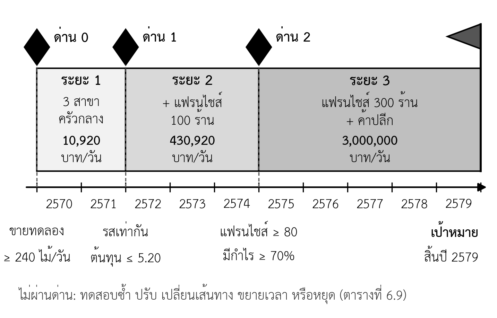

- เขียนวิสัยทัศน์และพันธกิจที่ชัดเจนและแยกจากกันได้
- เขียนเป้าหมายตามเกณฑ์ SMART สำหรับแต่ละระยะของเส้นทางได้
- ระบุทิศทางการเติบโตของแต่ละเส้นทางด้วยตาราง Ansoff และเปรียบเทียบเส้นทางทางเลือกด้วยเกณฑ์ถ่วงน้ำหนักได้
- กำหนดด่านตรวจที่มีเกณฑ์ผ่านเป็นตัวเลข และวางทางเลือกเมื่อไม่ผ่านด่านได้
- เลือกกลยุทธ์การแข่งขันที่สอดคล้องกับตำแหน่งทางการตลาดได้
- ประเมินความยั่งยืนของความได้เปรียบด้วยกรอบ VRIO ได้
- เขียนส่วนวิสัยทัศน์ เป้าหมาย และกลยุทธ์ในแผนธุรกิจได้
ความนำ
ห้าบทที่ผ่านมาตอบว่าลูกค้าคือใคร ต้องการอะไร ตลาดใหญ่เพียงใด และคู่แข่งคือใคร บทนี้เป็นจุดที่ข้อมูลทั้งหมดถูกแปลงเป็นการตัดสินใจ คือธุรกิจจะไปที่ไหน และจะไปอย่างไร ซึ่งเป็นแก่นของโจทย์รายวิชา เป้าหมายวันละ 3 ล้านบาทเขียนได้ในบรรทัดเดียว แต่เส้นทางไปถึงเป้าหมายต้องอาศัยการเลือกระหว่างทางเลือกหลายทาง การแบ่งเส้นทางเป็นระยะ และการตั้งเกณฑ์ว่าเมื่อใดจะเดินต่อ เมื่อใดจะหยุดหรือเปลี่ยนทาง
บทนี้เริ่มจากวิสัยทัศน์ พันธกิจ และเป้าหมายแบบ SMART จากนั้นจึงเปรียบเทียบเส้นทางทางเลือกด้วยตาราง Ansoff และเกณฑ์ถ่วงน้ำหนัก แบ่งเส้นทางที่เลือกเป็นระยะพร้อมด่านตรวจ กำหนดกลยุทธ์การแข่งขันให้สอดคล้องกับตำแหน่งทางการตลาดจากบทที่ 5 และตรวจว่าความได้เปรียบของธุรกิจยั่งยืนเพียงใดด้วยกรอบ VRIO ท้ายบทแสดงเหตุการณ์ที่คุณตั้มไม่ผ่านด่านตรวจแรก และวิธีปรับแผน ซึ่งเป็นตัวอย่างของหลักที่ว่าวิธีการไปถึงเป้าหมายสำคัญกว่าตัวเป้าหมาย
6.1 วิสัยทัศน์ พันธกิจ และค่านิยม
วิสัยทัศน์ (vision) คือภาพที่ธุรกิจต้องการเป็นในอนาคต ส่วนพันธกิจ (mission) คือสิ่งที่ธุรกิจทำทุกวันเพื่อลูกค้ากลุ่มใดและด้วยวิธีใด วิสัยทัศน์ตอบว่า "จะไปที่ไหน" พันธกิจตอบว่า "ทำอะไรอยู่" ส่วนค่านิยม (values) คือหลักที่ทุกคนในธุรกิจยึดถือเมื่อต้องตัดสินใจ เช่น จะไม่ลดคุณภาพวัตถุดิบเพื่อลดต้นทุน ทั้งสามส่วนไม่ใช่ข้อความสวยงามสำหรับติดผนัง แต่เป็นเกณฑ์ที่ใช้ตัดสินใจเมื่อมีทางเลือกที่ขัดกัน
ตารางที่ 6.1 ข้อความวิสัยทัศน์และพันธกิจที่ยังไม่ดีและที่ดีกว่า
| ประเภท | ข้อความที่ยังไม่ดี | ปัญหา | ข้อความที่ดีกว่า |
|---|---|---|---|
| วิสัยทัศน์ | เป็นผู้นำด้านอาหารคุณภาพ | กว้างจนใช้ได้กับทุกธุรกิจ วัดไม่ได้ | เป็นแบรนด์หมูปิ้งที่ครอบครัวไทยหาซื้อได้ทั่วประเทศ ด้วยยอดขายทั้งระบบวันละ 3 ล้านบาทภายในปี 2579 |
| พันธกิจ | มุ่งมั่นให้บริการที่ดีที่สุดแก่ลูกค้า | ไม่บอกว่าลูกค้าคือใครและทำอะไร | ส่งมอบอาหารเช้าหมูปิ้งที่สะอาดและรสเดียวกันทุกสาขา ให้นักเรียนและคนทำงาน ด้วยการหมักจากครัวกลางและการสั่งล่วงหน้าทาง LINE |
| ค่านิยม | ซื่อสัตย์ ขยัน อดทน | เป็นคุณธรรมทั่วไป ไม่ช่วยตัดสินใจ | ไม่ขยายสาขาถ้ารสชาติยังไม่เท่ากัน · ไม่ปรับตัวเลขในแผนให้ถึงเป้า |
สังเกตว่าวิสัยทัศน์ที่ดีกว่าในตารางที่ 6.1 มีทั้งภาพปลายทางและตัวเลข ซึ่งต่างจากวิสัยทัศน์ทั่วไปที่มักเป็นข้อความเชิงแรงบันดาลใจ ในรายวิชานี้ วิสัยทัศน์ต้องเชื่อมกับเป้าหมายปลายทางที่คิดย้อนกลับได้ (หัวข้อ 1.10) เพื่อให้เห็นว่าวิสัยทัศน์นำไปสู่การตัดสินใจอะไร ส่วนค่านิยมข้อที่สองในตาราง คือการไม่ปรับตัวเลขให้ถึงเป้า เป็นหลักจรรยาบรรณของรายวิชาที่เขียนเป็นค่านิยมของธุรกิจ
6.2 เป้าหมายแบบ SMART
6.2.1 เกณฑ์ SMART
เป้าหมายที่ใช้ติดตามผลได้ต้องเขียนให้ชัดพอที่จะบอกได้ว่าบรรลุหรือไม่ Doran (1981) เสนอเกณฑ์ SMART สำหรับเขียนเป้าหมายของฝ่ายบริหาร ตัวอักษรในบทความต้นฉบับหมายถึง เฉพาะเจาะจง (specific) วัดได้ (measurable) ระบุผู้รับผิดชอบได้ (assignable) เป็นไปได้จริง (realistic) และมีกรอบเวลา (time-related) ในการใช้งานภายหลัง มีผู้ปรับตัวอักษรบางตัว เช่น ใช้ทำได้ (achievable) และเกี่ยวข้อง (relevant) แทน รายวิชานี้ใช้ความหมายตามต้นฉบับ เพราะการระบุผู้รับผิดชอบเป็นสิ่งที่แผนของนิสิตมักขาด
ตารางที่ 6.2 เป้าหมายที่ยังไม่เป็น SMART และที่แก้แล้ว
| เป้าหมายที่ยังไม่ดี | ขาดเกณฑ์ใด | เป้าหมายที่แก้แล้ว |
|---|---|---|
| เพิ่มยอดขายให้มากที่สุด | เฉพาะเจาะจง วัดได้ กรอบเวลา | สาขาใหม่สองแห่งขายเฉลี่ยวันละไม่น้อยกว่า 240 ไม้ ภายในหกเดือนหลังเปิด |
| ลดต้นทุน | วัดได้ ผู้รับผิดชอบ กรอบเวลา | คุณตั้มลดต้นทุนต่อไม้จาก 5.50 เป็นไม่เกิน 5.20 บาท ภายใน 31 ธันวาคม 2571 |
| ขยายแฟรนไชส์ทั่วประเทศในปีหน้า | เป็นไปได้จริง | มีร้านแฟรนไชส์ไม่น้อยกว่า 100 ร้านในภาคอีสาน ภายใน 31 ธันวาคม 2574 |
| ลูกค้าพอใจมากขึ้น | เฉพาะเจาะจง วัดได้ | ร้อยละ 70 ของสำนักงานที่สั่งครั้งแรกสั่งซ้ำภายในหนึ่งเดือน |
6.2.2 เป้าหมายของแต่ละระยะ
เป้าหมายปลายทางวันละ 3 ล้านบาทยังไม่ใช่เป้าหมายที่ทำงานได้ทันที เพราะห่างจากวันนี้หลายปี สิ่งที่ทีมใช้ทำงานจริงคือเป้าหมายของแต่ละระยะ ซึ่งต้องผ่านเกณฑ์ SMART ทุกข้อ และต้องรวมกันแล้วนำไปสู่เป้าหมายปลายทาง (ตารางที่ 6.3) เป้าหมายของระยะแรกต้องละเอียดที่สุด เพราะเป็นระยะที่จะลงมือทันทีและเป็นระยะที่ยื่นต่อธนาคาร ส่วนเป้าหมายของระยะหลังมีตัวเลขหลักไว้ และจะปรับให้ละเอียดเมื่อใกล้ถึงระยะนั้น
ตารางที่ 6.3 เป้าหมาย SMART ของแต่ละระยะ (กรณีศึกษาสมมติ)
| ระยะ | ภายในวันที่ | เป้าหมาย | ผู้รับผิดชอบ |
|---|---|---|---|
| 1 | 31 ธ.ค. 2571 | ยอดขายสามสาขาเฉลี่ยวันละไม่น้อยกว่า 10,920 บาทในหกเดือนสุดท้าย · ต้นทุนต่อไม้ไม่เกิน 5.20 บาท · ผ่อนสินเชื่อตรงงวดทุกงวด · มีผู้สนใจซื้อแฟรนไชส์ลงชื่อไม่น้อยกว่า 10 ราย | คุณตั้ม |
| 2 | 31 ธ.ค. 2574 | ร้านแฟรนไชส์ไม่น้อยกว่า 100 ร้าน · ยอดขายทั้งระบบวันละไม่น้อยกว่า 430,920 บาท · ร้านแฟรนไชส์ไม่น้อยกว่าร้อยละ 70 มีกำไรในปีแรก | คุณตั้มและผู้จัดการแฟรนไชส์ |
| 3 | 31 ธ.ค. 2579 | ยอดขายทั้งระบบวันละ 3,000,000 บาท จากแฟรนไชส์ 300 ร้าน หมูหมักแช่แข็งประมาณ 21,600 แพ็กต่อวัน และสาขาเดิม | ทีมบริหาร |
6.3 เส้นทางทางเลือกและการเปรียบเทียบ
6.3.1 ทิศทางการเติบโตตามตาราง Ansoff
เส้นทางสู่เป้าหมายที่ใหญ่ขึ้นทุกเส้นทางเป็นการเติบโต ซึ่งแบ่งได้ตามสินค้าและตลาด Ansoff (1957) เสนอตารางที่แบ่งการเติบโตเป็นสี่ทิศทาง ได้แก่ การเจาะตลาด (market penetration) คือขายสินค้าเดิมให้ตลาดเดิมมากขึ้น การพัฒนาตลาด (market development) คือนำสินค้าเดิมไปตลาดใหม่ การพัฒนาสินค้า (product development) คือสินค้าใหม่สำหรับตลาดเดิม และการกระจายธุรกิจ (diversification) คือสินค้าใหม่ในตลาดใหม่ ทิศทางหลังสุดมีความเสี่ยงสูงที่สุด เพราะธุรกิจต้องเรียนรู้ทั้งสินค้าและตลาดพร้อมกัน
ตารางที่ 6.4 ทิศทางการเติบโตของกรณีศึกษาตามตาราง Ansoff (กรณีศึกษาสมมติ)
| ทิศทาง | สินค้า | ตลาด | ตัวอย่างในกรณีศึกษา | ระดับความเสี่ยง |
|---|---|---|---|---|
| การเจาะตลาด | เดิม | เดิม | ขายให้นักเรียนโรงเรียนเดิมมากขึ้น | ต่ำ |
| การพัฒนาตลาด | เดิม | ใหม่ | เปิดสาขาโรงเรียนใหม่ (ระยะ 1) แฟรนไชส์ในจังหวัดอื่น (ระยะ 2) | ปานกลาง |
| การพัฒนาสินค้า | ใหม่ | เดิม | ชุดอาหารเช้าสั่งกลุ่มสำหรับสำนักงานที่เป็นลูกค้าอยู่แล้ว | ปานกลาง |
| การกระจายธุรกิจ | ใหม่ | ใหม่ | หมูหมักแช่แข็งขายครอบครัวผ่านร้านค้าปลีก (ระยะ 3) | สูง |
ตาราง Ansoff ช่วยอธิบายว่าทำไมเส้นทางของกรณีศึกษาจึงต้องแบ่งเป็นระยะ ระยะที่ 1 และ 2 อยู่ในทิศทางที่เสี่ยงปานกลาง ส่วนระยะที่ 3 คือการกระจายธุรกิจ ซึ่งเสี่ยงที่สุด การเดินไปถึงระยะที่ 3 หลังจากผ่านสองระยะแรกแล้ว ทำให้ธุรกิจมีเงิน หลักฐาน และความสามารถมากพอก่อนรับความเสี่ยงสูงสุด
6.3.2 เปรียบเทียบเส้นทางด้วยเกณฑ์ถ่วงน้ำหนัก
เมื่อมีเส้นทางทางเลือกหลายเส้นทาง ควรเปรียบเทียบด้วยเกณฑ์เดียวกันอย่างเป็นระบบ วิธีเดียวกับตารางเปรียบเทียบคู่แข่งในบทที่ 5 คือกำหนดเกณฑ์ ให้น้ำหนักตามความสำคัญ ให้คะแนนแต่ละเส้นทาง แล้วรวม เกณฑ์ที่ใช้ควรสะท้อนสิ่งที่ธุรกิจกังวลจริง สำหรับกรณีศึกษาคือเงินลงทุน เวลา การรักษาคุณค่าหลัก ความสามารถที่มี และความเสี่ยงต่อกำไร (ตารางที่ 6.5)
ตารางที่ 6.5 เปรียบเทียบเส้นทางสู่วันละ 3 ล้านบาทด้วยเกณฑ์ถ่วงน้ำหนัก (กรณีศึกษาสมมติ)
| เส้นทาง | ใช้เงินลงทุนน้อย (3) | ถึงเป้าเร็ว (2) | รักษาคุณค่ามาตรฐานเดียวกัน (3) | ทำได้ด้วยความสามารถปัจจุบัน (2) | ความเสี่ยงต่อกำไรต่ำ (2) | คะแนนถ่วงน้ำหนัก |
|---|---|---|---|---|---|---|
| ก. เปิดสาขาเองประมาณ 714 สาขา | 1 | 1 | 5 | 2 | 3 | 2.50 |
| ข. แฟรนไชส์ล้วน | 4 | 4 | 2 | 3 | 3 | 3.17 |
| ค. หมูหมักแช่แข็งผ่านร้านค้าปลีกล้วน | 2 | 3 | 4 | 1 | 2 | 2.50 |
| ง. ผสมเป็นระยะ | 3 | 3 | 3 | 4 | 3 | 3.17 |
หมายเหตุ: คะแนน 1–5 ยิ่งสูงยิ่งดี ตัวเลขในวงเล็บคือน้ำหนัก ผลรวมน้ำหนักเท่ากับ 12
6.3.3 เมื่อคะแนนเท่ากัน
ผลในตารางที่ 6.5 คือเส้นทาง ข. และ ง. ได้คะแนนเท่ากัน ผลแบบนี้เกิดขึ้นได้บ่อย และเป็นบทเรียนสำคัญ ตารางถ่วงน้ำหนักเป็นเครื่องมือช่วยคิดให้เป็นระบบ ไม่ได้ตัดสินใจแทนผู้ประกอบการ เมื่อคะแนนใกล้กัน ต้องตัดสินด้วยเหตุผลที่ตารางไม่ได้วัด และต้องเขียนเหตุผลนั้นไว้ในแผน
คุณตั้มเลือกเส้นทาง ง. ด้วยเหตุผลสามข้อ ข้อแรก แต่ละระยะสร้างหลักฐานและเงินให้ระยะถัดไป ระยะที่ 1 พิสูจน์ว่าครัวกลางทำให้รสเท่ากันทุกสาขาได้จริง ก่อนจะขายระบบนั้นเป็นแฟรนไชส์ ข้อที่สอง เส้นทาง ข. ต้องเดิมพันคุณค่า "มาตรฐานเดียวกัน" กับร้านแฟรนไชส์จำนวนมากตั้งแต่ต้น ซึ่งถ้าล้มเหลว แบรนด์จะเสียหายทั้งระบบ ข้อที่สาม เส้นทาง ง. มีด่านตรวจให้หยุดหรือเปลี่ยนทางได้ ซึ่งลดความเสียหายถ้าข้อสมมติข้อใดผิด เหตุผลทั้งสามข้อเป็นเรื่องของวิธีการ ไม่ใช่เรื่องของขนาดเป้าหมาย
วิธีตรวจว่าการเลือกมั่นคงเพียงใดคือการทดสอบความไว (sensitivity check) โดยเปลี่ยนน้ำหนักของเกณฑ์ที่ทีมไม่แน่ใจที่สุด แล้วดูว่าผลการเลือกเปลี่ยนหรือไม่ ตารางที่ 6.6 แสดงผลเมื่อเพิ่มน้ำหนักของเกณฑ์รักษาคุณค่า "มาตรฐานเดียวกัน" จาก 3 เป็น 5 ซึ่งสะท้อนค่านิยมของร้านที่จะไม่ขยายถ้ารสยังไม่เท่ากัน ผลคือเส้นทาง ง. ได้คะแนนสูงกว่าเส้นทาง ข. ชัดเจนขึ้น แสดงว่าการเลือกเส้นทาง ง. สอดคล้องกับค่านิยมของร้าน ถ้าการเปลี่ยนน้ำหนักเล็กน้อยทำให้ผลกลับข้าง แสดงว่าการเลือกยังไม่มั่นคง และควรหาหลักฐานเพิ่มก่อนตัดสินใจ
ตารางที่ 6.6 ทดสอบความไว: เพิ่มน้ำหนักเกณฑ์รักษาคุณค่าหลักจาก 3 เป็น 5 (กรณีศึกษาสมมติ)
| เส้นทาง | คะแนนเดิม (น้ำหนักรวม 12) | คะแนนใหม่ (น้ำหนักรวม 14) | ลำดับใหม่ |
|---|---|---|---|
| ก. เปิดสาขาเอง | 2.50 | 2.86 | 3 |
| ข. แฟรนไชส์ล้วน | 3.17 | 3.00 | 2 |
| ค. ค้าปลีกล้วน | 2.50 | 2.71 | 4 |
| ง. ผสมเป็นระยะ | 3.17 | 3.14 | 1 |
6.4 ระยะและด่านตรวจ
6.4.1 ด่านตรวจคืออะไร
ด่านตรวจ (stage gate) คือจุดตัดสินใจระหว่างระยะ ซึ่งมีเกณฑ์ผ่านเป็นตัวเลขที่ตั้งไว้ล่วงหน้า ธุรกิจจะเดินต่อไปสู่ระยะถัดไปเมื่อผ่านเกณฑ์ทุกข้อ ไม่ใช่เมื่อถึงกำหนดเวลา หลักนี้ต่อยอดจากบัตรทดสอบในบทที่ 3 ซึ่งตั้งเกณฑ์ผ่านก่อนทดสอบ ด่านตรวจคือการใช้หลักเดียวกันกับการตัดสินใจลงทุนครั้งใหญ่ ภาพที่ 6.1 แสดงแผนที่เส้นทางของกรณีศึกษา

ตารางที่ 6.7 ด่านตรวจและเกณฑ์ผ่านของกรณีศึกษา (กรณีศึกษาสมมติ)
| ด่าน | เวลา | เกณฑ์ผ่าน (ต้องผ่านทุกข้อ) | ถ้าผ่าน |
|---|---|---|---|
| ด่าน 0 | ต้นปี 2570 ก่อนขอสินเชื่อ | ขายทดลองแต่ละโรงเรียนใหม่เฉลี่ยไม่น้อยกว่า 240 ไม้ต่อวัน 5 วันทำการ · มีสำนักงานสั่งซ้ำทาง LINE ไม่น้อยกว่า 5 แห่งใน 2 สัปดาห์ | ยื่นขอสินเชื่อ เปิดสาขาใหม่ |
| ด่าน 1 | ปลายปี 2571 | สาขาใหม่เฉลี่ยไม่น้อยกว่า 240 ไม้ต่อวันต่อเนื่อง 6 เดือน · ต้นทุนต่อไม้ไม่เกิน 5.20 บาท · ผู้ชิมแบบไม่บอกสาขา 30 คน แยกสาขาไม่ได้ไม่น้อยกว่าร้อยละ 70 · ผ่อนตรงงวดทุกงวด · ผู้สนใจแฟรนไชส์ไม่น้อยกว่า 10 ราย | เริ่มระยะที่ 2 เขียนแผนสำหรับผู้ลงทุน |
| ด่าน 2 | ปลายปี 2574 | ร้านแฟรนไชส์ไม่น้อยกว่า 80 ร้าน · ไม่น้อยกว่าร้อยละ 70 มีกำไรในปีแรก · ปิดร้านไม่เกินร้อยละ 10 ต่อปี · ขายทดลองหมูหมักแช่แข็งในร้านค้าปลีกท้องถิ่นได้ตามเกณฑ์ · ได้รับอนุญาตผลิตอาหารตามมาตรฐานของหน่วยงานด้านอาหาร | เริ่มระยะที่ 3 ลงทุนโรงงาน |
เกณฑ์ของด่านตรวจไม่จำเป็นต้องเท่ากับเป้าหมาย SMART ของระยะ ด่าน 2 กำหนดร้านแฟรนไชส์ไม่น้อยกว่า 80 ร้าน ขณะที่เป้าหมายของระยะที่ 2 คือ 100 ร้าน เพราะเป้าหมายบอกว่าตั้งใจจะไปถึงที่ใด ส่วนเกณฑ์ของด่านบอกระดับขั้นต่ำที่มีหลักฐานพอจะลงทุนในระยะถัดไป ถ้าระยะที่ 2 จบที่ 85 ร้านและร้านส่วนใหญ่มีกำไร ร้านยังผ่านด่านและเดินต่อได้ แม้ไม่ถึงเป้าหมาย
6.4.2 เกณฑ์ผ่านที่ดี
เกณฑ์ผ่านที่ดีมีสามลักษณะ ลักษณะแรก วัดได้จากหลักฐานจริง ไม่ใช่ความรู้สึกของทีม เช่น ใช้ยอดขายเฉลี่ยจากสมุดบัญชี ไม่ใช่ "ลูกค้าตอบรับดี" ลักษณะที่สอง ตรวจข้อสมมติที่ระยะถัดไปพึ่งพา เช่น ด่าน 1 ตรวจว่ารสชาติเท่ากันทุกสาขา เพราะระยะที่ 2 จะขายระบบนี้ให้ผู้ซื้อแฟรนไชส์ ลักษณะที่สาม ครอบคลุมทั้งด้านลูกค้า ด้านการดำเนินงาน และด้านการเงิน ไม่ใช่ยอดขายอย่างเดียว ด่าน 1 ในตารางที่ 6.7 จึงมีทั้งยอดขาย ต้นทุน รสชาติ การผ่อนชำระ และความสนใจของผู้ซื้อแฟรนไชส์
นิสิตควรเขียนด่านตรวจของกลุ่มตามแม่แบบในตารางที่ 6.8 ซึ่งบังคับให้แยกเกณฑ์สามด้าน ระบุข้อสมมติที่ด่านนั้นตรวจ และเขียนล่วงหน้าว่าถ้าไม่ผ่านจะทำอะไร ตารางกรอกตัวอย่างด่าน 1 ของกรณีศึกษาไว้
ตารางที่ 6.8 แม่แบบด่านตรวจ พร้อมตัวอย่างด่าน 1 ของกรณีศึกษา (กรณีศึกษาสมมติ)
| หัวข้อ | ตัวอย่าง: ด่าน 1 ระยะ 1 ไป 2 |
|---|---|
| เวลาตรวจ | ปลายปี 2571 |
| เกณฑ์ด้านลูกค้า | สาขาใหม่เฉลี่ยไม่น้อยกว่า 240 ไม้ต่อวันต่อเนื่อง 6 เดือน · ผู้สนใจซื้อแฟรนไชส์ลงชื่อไม่น้อยกว่า 10 ราย |
| เกณฑ์ด้านการดำเนินงาน | ผู้ชิมแบบไม่บอกสาขา 30 คน แยกสาขาไม่ได้ไม่น้อยกว่าร้อยละ 70 · มีขั้นตอนมาตรฐานการหมักเป็นลายลักษณ์อักษร |
| เกณฑ์ด้านการเงิน | ต้นทุนต่อไม้ไม่เกิน 5.20 บาท · ผ่อนสินเชื่อตรงงวดทุกงวด |
| ข้อสมมติที่ด่านนี้ตรวจ | ครัวกลางทำให้รสเท่ากันและต้นทุนลดลง · มีคนอยากซื้อแฟรนไชส์ |
| หลักฐานที่ใช้ | สมุดบัญชีรายวัน ผลการชิม ใบแจ้งหนี้ค่าวัตถุดิบ รายชื่อผู้สนใจ |
| ถ้าผ่าน | เริ่มระยะที่ 2 เขียนแผนสำหรับผู้ลงทุนและผู้ซื้อแฟรนไชส์ |
| ถ้าไม่ผ่าน | หาสาเหตุ ถ้ารสไม่เท่ากัน ปรับขั้นตอนครัวกลางแล้วตรวจซ้ำในสามเดือน ถ้าไม่มีผู้สนใจแฟรนไชส์ พิจารณาเปลี่ยนเส้นทางไปเน้นร้านค้าปลีก ถ้ากระแสเงินสดไม่พอ คงไว้ที่สามสาขา |
6.4.3 เมื่อไม่ผ่านด่าน
การไม่ผ่านด่านไม่ใช่ความล้มเหลวของแผน แต่เป็นหน้าที่ของด่าน คือหยุดธุรกิจไม่ให้ลงทุนต่อบนข้อสมมติที่ผิด สิ่งที่แผนต้องเตรียมไว้คือทางเลือกเมื่อไม่ผ่าน ซึ่งมีห้าแบบ (ตารางที่ 6.9) การเลือกขึ้นกับสาเหตุที่ไม่ผ่าน ถ้าสาเหตุแก้ได้ภายในเส้นทางเดิม ให้ทำซ้ำหรือปรับ ถ้าสาเหตุชี้ว่าข้อสมมติหลักผิด ให้เปลี่ยนเส้นทางหรือขยายเวลา
ตารางที่ 6.9 ทางเลือกเมื่อไม่ผ่านด่านตรวจ
| ทางเลือก | ใช้เมื่อ | ตัวอย่างในกรณีศึกษา |
|---|---|---|
| ทดสอบซ้ำ | ผลอาจคลาดเคลื่อนจากเหตุชั่วคราว เช่น ฝนตกหลายวัน | ขายทดลองโรงเรียนเดิมอีก 5 วัน |
| ปรับภายในเส้นทาง | สาเหตุอยู่ที่องค์ประกอบหนึ่งที่เปลี่ยนได้ | เปลี่ยนทำเลจากโรงเรียน ข เป็นโรงเรียน ค |
| เปลี่ยนเส้นทาง | ข้อสมมติหลักของเส้นทางผิด | ถ้าไม่มีผู้สนใจแฟรนไชส์ เปลี่ยนไปเน้นร้านค้าปลีกเร็วขึ้น |
| ขยายเวลา | เส้นทางถูกแต่ช้ากว่าคาด | เลื่อนเป้าหมายวันละ 3 ล้านบาทจากปี 2579 ออกไป |
| หยุด | หลักฐานชี้ว่าเส้นทางทั้งหมดไม่คุ้ม | คงไว้ที่สามสาขาและบริหารให้มีกำไรดีที่สุด |
ทางเลือกสุดท้าย คือการหยุด ก็เป็นข้อสรุปที่ถูกต้องได้ ถ้าหลักฐานรองรับ ร้านหมูปิ้งสามสาขาที่มีกำไรดีและไม่มีหนี้ค้างเป็นธุรกิจที่ดี แม้จะไม่ถึงวันละ 3 ล้านบาท แผนที่ยอมรับข้อสรุปนี้ได้คือแผนที่ปกป้องเงินของผู้ประกอบการและผู้ให้กู้ ซึ่งตรงกับหลักของรายวิชาที่ให้คะแนนคุณภาพของเส้นทาง ไม่ใช่ขนาดของเป้า (หัวข้อ 1.10.3)
6.5 กลยุทธ์การแข่งขัน
6.5.1 กลยุทธ์ทั่วไปของ Porter
เส้นทางบอกว่าธุรกิจจะเติบโตไปทางใด ส่วนกลยุทธ์การแข่งขัน (competitive strategy) บอกว่าธุรกิจจะชนะคู่แข่งในตลาดที่เลือกด้วยอะไร Porter (1985) อธิบายว่าความได้เปรียบในการแข่งขันมีสองแหล่งพื้นฐาน คือต้นทุนต่ำ และความแตกต่าง เมื่อรวมกับขอบเขตของตลาดที่เลือก จะได้กลยุทธ์ทั่วไปสามแบบ คือ การเป็นผู้นำด้านต้นทุน การสร้างความแตกต่าง และการมุ่งเฉพาะส่วน ซึ่งแบ่งย่อยเป็นการมุ่งเฉพาะส่วนด้วยต้นทุน และการมุ่งเฉพาะส่วนด้วยความแตกต่าง ธุรกิจที่ไม่เลือกให้ชัดมักเสียเปรียบ เพราะไม่ถูกที่สุดและไม่ต่างพอที่ลูกค้าจะยอมจ่ายเพิ่ม
ตารางที่ 6.10 กลยุทธ์การแข่งขันทั่วไปและการนำไปใช้
| กลยุทธ์ | ขอบเขตตลาด | ชนะด้วย | เหมาะกับธุรกิจที่ | ตัวอย่างลักษณะธุรกิจ |
|---|---|---|---|---|
| ผู้นำด้านต้นทุน (cost leadership) | กว้าง | ต้นทุนต่ำที่สุดในอุตสาหกรรม | ผลิตจำนวนมาก มีการประหยัดจากขนาด | ผู้ผลิตอาหารแช่แข็งรายใหญ่ |
| การสร้างความแตกต่าง (differentiation) | กว้าง | สิ่งที่ลูกค้ายอมจ่ายเพิ่ม | มีแบรนด์ นวัตกรรม หรือคุณภาพที่เลียนแบบยาก | แบรนด์อาหารพรีเมียมระดับประเทศ |
| มุ่งเฉพาะส่วนด้วยต้นทุน (cost focus) | แคบ | ต้นทุนต่ำในกลุ่มลูกค้าเฉพาะ | ตลาดเล็กที่รายใหญ่ไม่สนใจ | ร้านอาหารราคาประหยัดในชุมชน |
| มุ่งเฉพาะส่วนด้วยความแตกต่าง (differentiation focus) | แคบ | ตอบความต้องการพิเศษของกลุ่มลูกค้าเฉพาะ | เข้าใจกลุ่มลูกค้าลึกกว่ารายใหญ่ | ชุดอาหารเช้าสั่งกลุ่มสำหรับสำนักงาน |
6.5.2 กลยุทธ์ต้องเปลี่ยนตามระยะ
ในระยะที่ 1 หมูปิ้งอาจารย์ตั้มใช้กลยุทธ์มุ่งเฉพาะส่วนด้วยความแตกต่าง คือเน้นลูกค้าสำนักงานที่ต้องการสั่งกลุ่ม ซึ่งสอดคล้องกับผลการวิเคราะห์ในบทที่ 5 ที่ไม่ควรแข่งด้านราคาหรือความเร็วกับร้านสะดวกซื้อ แต่ในระยะที่ 3 สถานการณ์เปลี่ยน สินค้าแช่แข็งในร้านค้าปลีกแข่งกับผู้ผลิตรายใหญ่ที่ได้ประโยชน์จากการประหยัดจากขนาด และร้านค้าปลีกมีอำนาจต่อรองสูง (ตารางที่ 5.12) ร้านจึงต้องมีต้นทุนที่แข่งได้ หรือมีความแตกต่างที่ครอบครัวยอมจ่ายเพิ่ม เช่น รสชาติของร้านที่คนรู้จัก ข้อสรุปนี้แสดงว่ากลยุทธ์ของระยะหนึ่งอาจใช้ไม่ได้ในระยะถัดไป แผนจึงต้องระบุว่าจะเปลี่ยนกลยุทธ์เมื่อใด และต้องเตรียมอะไรล่วงหน้า
6.6 ความได้เปรียบที่ยั่งยืน
6.6.1 กรอบ VRIO
ความได้เปรียบที่คู่แข่งเลียนแบบได้ภายในไม่กี่เดือนไม่ช่วยให้ธุรกิจอยู่รอดในระยะยาว Barney (1991) เสนอว่าทรัพยากรที่สร้างความได้เปรียบที่ยั่งยืนต้องมีคุณค่า หายาก เลียนแบบได้ยาก และหาสิ่งทดแทนได้ยาก ต่อมา Barney (1995) ปรับเป็นคำถามสี่ข้อที่เรียกว่ากรอบ VRIO (VRIO framework) ได้แก่ ทรัพยากรนั้นมีคุณค่าหรือไม่ (value) หายากหรือไม่ (rarity) เลียนแบบได้ยากหรือไม่ (imitability) และธุรกิจจัดองค์กรให้ใช้ประโยชน์ได้หรือไม่ (organization) ยิ่งตอบว่าใช่ได้มากข้อ ความได้เปรียบยิ่งยั่งยืน
ตารางที่ 6.11 การอ่านผลกรอบ VRIO
| มีคุณค่า | หายาก | เลียนแบบยาก | จัดองค์กรรองรับ | ผลต่อการแข่งขัน |
|---|---|---|---|---|
| ไม่ใช่ | – | – | – | เสียเปรียบ |
| ใช่ | ไม่ใช่ | – | – | เสมอภาค ทุกร้านมีเหมือนกัน |
| ใช่ | ใช่ | ไม่ใช่ | – | ได้เปรียบชั่วคราว จนกว่าคู่แข่งจะเลียนแบบ |
| ใช่ | ใช่ | ใช่ | ไม่ใช่ | มีศักยภาพแต่ยังไม่ได้ใช้ |
| ใช่ | ใช่ | ใช่ | ใช่ | ได้เปรียบที่ยั่งยืน |
ที่มา: เรียบเรียงจาก Barney (1995)
6.6.2 VRIO ของกรณีศึกษา
ตารางที่ 6.12 การวิเคราะห์ VRIO ของหมูปิ้งอาจารย์ตั้ม ระยะที่ 1 (กรณีศึกษาสมมติ)
| ทรัพยากร | V | R | I | O | ผล | สิ่งที่ต้องทำ |
|---|---|---|---|---|---|---|
| สูตรหมักเฉพาะ | ใช่ | ใช่ | ปานกลาง | ยังไม่ (พึ่งเจ้าของคนเดียว) | ได้เปรียบชั่วคราว | เขียนขั้นตอนมาตรฐานและหมักที่ครัวกลาง |
| ทำเลหน้าโรงเรียน | ใช่ | ไม่ใช่ | – | – | เสมอภาค | ทำสัญญาเช่าระยะยาว |
| ฐานลูกค้าสำนักงานในกลุ่ม LINE | ใช่ | ใช่ในพื้นที่ | ปานกลาง ต้องใช้เวลาสร้าง | ใช่ | ได้เปรียบ | รักษาอัตราการสั่งซ้ำ |
| ครัวกลาง | ใช่ | ไม่ใช่ | – | – | เสมอภาค แต่จำเป็น | ไม่ใช่ความได้เปรียบ แต่ขาดไม่ได้ |
| แบรนด์ "อาจารย์ตั้ม" | ใช่ในพื้นที่ | ใช่ | ยาก | ยังไม่ (ยังไม่จดเครื่องหมายการค้า) | มีศักยภาพแต่ยังไม่ได้ใช้ | จดทะเบียนเครื่องหมายการค้า (บทที่ 9) |
ผลการวิเคราะห์ชี้สองเรื่อง เรื่องแรก ความได้เปรียบที่สำคัญที่สุดของร้านในระยะที่ 1 คือฐานลูกค้าสำนักงาน ไม่ใช่ทำเลหรือครัวกลาง ซึ่งตรงกับข้อสรุปของบทที่ 5 เรื่องที่สอง สูตรหมักและแบรนด์มีศักยภาพแต่ยังไม่ได้รับการจัดการ ถ้าไม่เขียนขั้นตอนมาตรฐานและไม่จดเครื่องหมายการค้าก่อนขายแฟรนไชส์ ความได้เปรียบทั้งสองอาจหลุดไปอยู่กับผู้ซื้อแฟรนไชส์ ซึ่งเป็นความเสี่ยงที่ต้องแก้ก่อนด่าน 1
6.7 จากกลยุทธ์สู่แผนธุรกิจ
ผลของบทนี้เป็นเนื้อหาของแผนธุรกิจส่วนที่ 5 (ตารางที่ 1.6) ซึ่งควรมีหกองค์ประกอบ ได้แก่ วิสัยทัศน์ พันธกิจ และค่านิยม เป้าหมายปลายทางพร้อมการคิดย้อนกลับ เส้นทางทางเลือกและเหตุผลที่เลือก ระยะ เป้าหมาย SMART และด่านตรวจ กลยุทธ์การแข่งขันของระยะแรก และการวิเคราะห์ความได้เปรียบด้วย VRIO ส่วนนี้มักเป็นส่วนที่ผู้อ่านแผนใช้ตัดสินว่าผู้ประกอบการคิดเป็นระบบหรือไม่ เพราะแสดงทั้งความทะเยอทะยานและวินัยในการตัดสินใจ
สำหรับแผนที่ยื่นต่อธนาคาร ส่วนนี้ควรสั้นและเน้นระยะที่ 1 เพราะธนาคารให้กู้สำหรับระยะที่ 1 เท่านั้น เป้าหมายปลายทางและระยะต่อไปใส่ไว้เพื่อแสดงทิศทาง พร้อมย้ำว่าระยะต่อไปจะเริ่มเมื่อผ่านด่านตรวจเท่านั้น สำหรับแผนที่ยื่นต่อผู้ลงทุนในอนาคต ส่วนนี้จะยาวขึ้น และเน้นเส้นทางสู่เป้าหมายปลายทาง ซึ่งเป็นสิ่งที่ผู้ลงทุนสนใจ (ตารางที่ 1.3)
บทสรุป
เมื่อศึกษาบทนี้แล้ว นิสิตสามารถเขียนวิสัยทัศน์ พันธกิจ และค่านิยมที่ใช้ตัดสินใจได้จริง เขียนเป้าหมายตามเกณฑ์ SMART ให้แต่ละระยะ และเปรียบเทียบเส้นทางทางเลือกอย่างเป็นระบบด้วยตาราง Ansoff และเกณฑ์ถ่วงน้ำหนัก โดยรู้ว่าคะแนนเป็นเครื่องช่วยคิด ไม่ใช่ผู้ตัดสินใจ นิสิตกำหนดด่านตรวจที่มีเกณฑ์ผ่านเป็นตัวเลข เตรียมทางเลือกเมื่อไม่ผ่าน และยอมรับได้ว่าการหยุดหรือขยายเวลาเป็นข้อสรุปที่ถูกต้องเมื่อมีหลักฐาน นิสิตยังเลือกกลยุทธ์การแข่งขันให้สอดคล้องกับตำแหน่งทางการตลาด และประเมินความยั่งยืนของความได้เปรียบด้วย VRIO
บทนี้แสดงหลักของรายวิชาชัดเจนที่สุด เป้าหมายวันละ 3 ล้านบาทไม่ได้เปลี่ยนไปตลอดบท แต่สิ่งที่ทำให้แผนน่าเชื่อถือคือเส้นทาง ด่านตรวจ และวิธีรับมือเมื่อไม่ผ่านด่าน นิสิตนำความรู้นี้ไปใช้ในการนำเสนอครั้งที่ 1 ในสัปดาห์ที่ 8 และในแผนธุรกิจส่วนที่ 5 บทที่ 7 จะแปลงกลยุทธ์และข้อความระบุตำแหน่งเป็นแผนการตลาดและประมาณการยอดขายรายเดือน ซึ่งเป็นตัวเลขแรกของแผนการเงิน
คำศัพท์สำคัญ
- วิสัยทัศน์ (vision)
- พันธกิจ (mission)
- ค่านิยม (values)
- เป้าหมายแบบ SMART (SMART goals)
- การเจาะตลาด (market penetration)
- การพัฒนาตลาด (market development)
- การพัฒนาสินค้า (product development)
- การกระจายธุรกิจ (diversification)
- ด่านตรวจ (stage gate)
- การทดสอบความไว (sensitivity check)
- กลยุทธ์การแข่งขัน (competitive strategy)
- กรอบ VRIO (VRIO framework)
คำถามทบทวน
- วิสัยทัศน์ พันธกิจ และค่านิยมต่างกันอย่างไร และแต่ละส่วนช่วยการตัดสินใจอย่างไร
- จงแก้เป้าหมาย "ร้านจะเป็นที่รู้จักมากขึ้นในปีหน้า" ให้เป็นไปตามเกณฑ์ SMART และระบุว่าแก้เกณฑ์ใด
- เกณฑ์ SMART ในบทความต้นฉบับของ Doran (1981) ต่างจากที่ใช้กันทั่วไปอย่างไร และเพราะเหตุใดรายวิชาจึงเน้นการระบุผู้รับผิดชอบ
- จงจัดเส้นทางการเติบโตต่อไปนี้ลงในตาราง Ansoff และเรียงความเสี่ยง: ร้านกาแฟเปิดสาขาในจังหวัดใหม่ ร้านกาแฟขายเมล็ดกาแฟบรรจุถุงให้ลูกค้าประจำ ร้านกาแฟเปิดโรงแรม
- จากตารางที่ 6.5 เส้นทาง ข. และ ง. ได้คะแนนเท่ากัน เพราะเหตุใดจึงไม่ควรเลือกด้วยการโยนเหรียญ และควรตัดสินอย่างไร
- เกณฑ์ผ่านของด่านตรวจที่ดีมีลักษณะอย่างไร จงวิจารณ์เกณฑ์ "ลูกค้าตอบรับดี" ตามลักษณะนั้น
- ทางเลือกเมื่อไม่ผ่านด่านมีห้าแบบ จงอธิบายว่าควรเลือกแบบใดเมื่อใด
- เพราะเหตุใดการหยุดที่ระยะที่ 1 จึงอาจเป็นข้อสรุปที่ดีของแผนธุรกิจ
- กลยุทธ์มุ่งเฉพาะส่วนด้วยความแตกต่างของระยะที่ 1 อาจใช้ไม่ได้ในระยะที่ 3 เพราะเหตุใด
- จากตารางที่ 6.12 เพราะเหตุใดสูตรหมักจึงเป็นเพียงความได้เปรียบชั่วคราว และร้านต้องทำอะไรให้เป็นความได้เปรียบที่ยั่งยืน
กิจกรรมท้ายบท: ร่างวิสัยทัศน์ เส้นทาง และด่านตรวจของกลุ่ม
กิจกรรมนี้ไม่นับคะแนน ผู้สอนจะให้ข้อมูลป้อนกลับก่อนการนำเสนอครั้งที่ 1 ในสัปดาห์ที่ 8 ให้แต่ละกลุ่มส่งก่อนเริ่มเรียนสัปดาห์ที่ 7
- วิสัยทัศน์ พันธกิจ และค่านิยมสองข้อที่ใช้ตัดสินใจได้จริง
- เป้าหมายปลายทางจากใบงานที่ 1 ที่ปรับตามผลการวิเคราะห์ตลาดและคู่แข่ง
- เส้นทางทางเลือกอย่างน้อยสองเส้นทาง จัดลงตาราง Ansoff และเปรียบเทียบด้วยเกณฑ์ถ่วงน้ำหนัก พร้อมเหตุผลที่เลือก
- ระยะของเส้นทางที่เลือก เป้าหมาย SMART ของระยะแรก และด่านตรวจแรกตามแม่แบบตารางที่ 6.8
- ทางเลือกของกลุ่มถ้าไม่ผ่านด่านแรก
- กลยุทธ์การแข่งขันของระยะแรก และการวิเคราะห์ VRIO ของทรัพยากรสำคัญสามรายการ
เอกสารอ้างอิง
Ansoff, H. I. (1957). Strategies for diversification. Harvard Business Review, 35(5), 113–124.
Barney, J. (1991). Firm resources and sustained competitive advantage. Journal of Management, 17(1), 99–120.
Barney, J. B. (1995). Looking inside for competitive advantage. Academy of Management Executive, 9(4), 49–61.
Doran, G. T. (1981). There's a S.M.A.R.T. way to write management's goals and objectives. Management Review, 70(11), 35–36.
Porter, M. E. (1985). Competitive advantage: Creating and sustaining superior performance. Free Press.